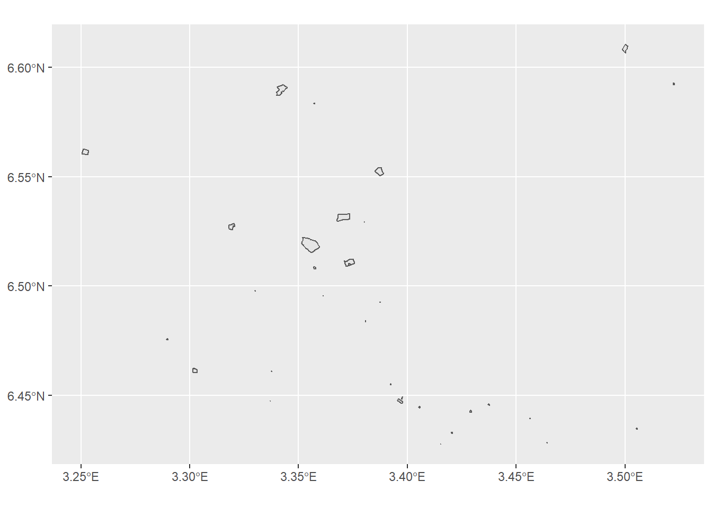
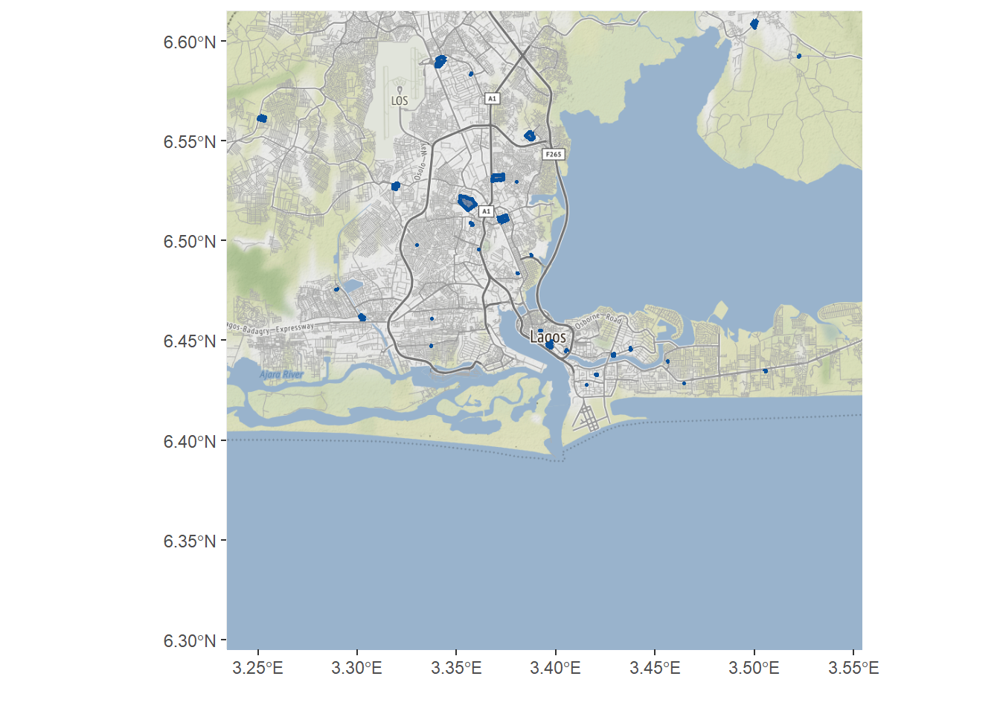
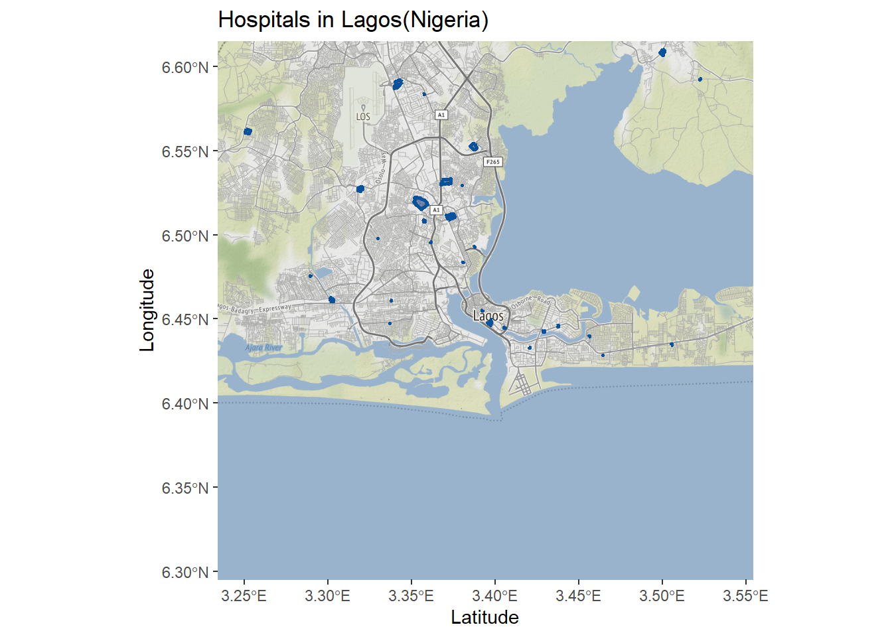
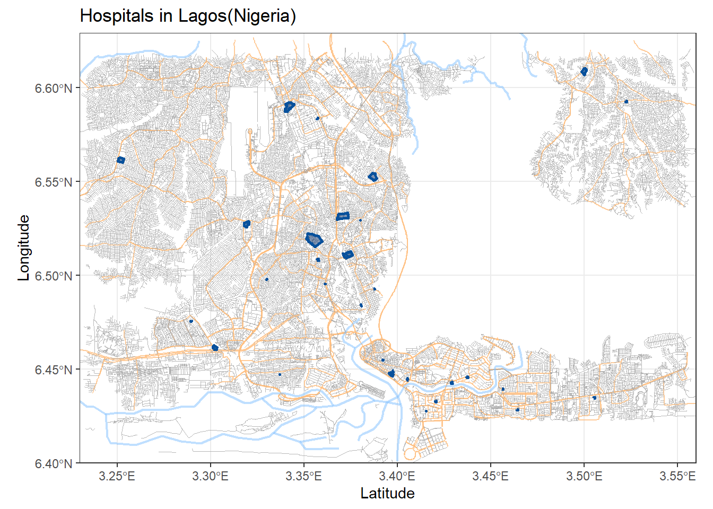

| Data set description: | Spatial features of Lagos (Nigeria) |
| Source: | OpenStreetMap (OSM) |
| Details on the retrieved data: | Hospitals, highways and rivers in Lagos (Nigeria), plotted along with the map studied region. |
| Spatial and temporal resolution: | High-resolution data at city level. |
osmdata packageosmdata is an R package for downloading data from OpenStreetMap (OSM). This tutorial takes you through the steps of retrieving points of interest in defined geographical areas using the osmdata package, and visualising them using the ggmap and ggplot2 packages.
osmdata packageWe can install and load the osmdata package from CRAN as follows
install.packages("osmdata")library(osmdata)osmdata packageThe osmdata package provides spatial data about a wide range of spatial properties and objects across the world. The available_features() function can be used to get the list of recognized features in OSM. A list of the available features can be found in the OSM wiki.
available_features()## [1] "4wd_only" "abandoned"
## [3] "abutters" "access"
## [5] "addr" "addr:city"
## [7] "addr:conscriptionnumber" "addr:country"
## [9] "addr:county" "addr:district"
## [11] "addr:flats" "addr:full"
## [13] "addr:hamlet" "addr:housename"
## [15] "addr:housenumber" "addr:inclusion"
## [17] "addr:interpolation" "addr:place"
## [19] "addr:postbox" "addr:postcode"
## [21] "addr:province" "addr:state"
## [23] "addr:street" "addr:subdistrict"
## [25] "addr:suburb" "addr:unit"
## [27] "admin_level" "aeroway"
## [29] "agricultural" "alt_name"
## [31] "amenity" "area"
## [33] "atv" "backward"
## [35] "barrier" "basin"
## [37] "bdouble" "bicycle"
## [39] "bicycle_road" "biergarten"
## [41] "boat" "border_type"
## [43] "boundary" "bridge"
## [45] "building" "building:colour"
## [47] "building:fireproof" "building:flats"
## [49] "building:levels" "building:material"
## [51] "building:min_level" "building:part"
## [53] "building:soft_storey" "bus_bay"
## [55] "busway" "castle_type"
## [57] "change" "charge"
## [59] "construction" "construction#Railways"
## [61] "covered" "craft"
## [63] "crossing" "crossing:island"
## [65] "cuisine" "cutting"
## [67] "cycleway" "denomination"
## [69] "destination" "diet"
## [71] "diplomatic" "direction"
## [73] "dispensing" "disused"
## [75] "disused:shop" "drive_in"
## [77] "drive_through" "ele"
## [79] "electric_bicycle" "electrified"
## [81] "embankment" "embedded_rails"
## [83] "emergency" "end_date"
## [85] "entrance" "est_width"
## [87] "fee" "fire_object:type"
## [89] "fire_operator" "fire_rank"
## [91] "foot" "footway"
## [93] "ford" "forestry"
## [95] "forward" "frequency"
## [97] "fuel" "gauge"
## [99] "golf_cart" "goods"
## [101] "hazmat" "healthcare"
## [103] "healthcare:counselling" "healthcare:speciality"
## [105] "height" "hgv"
## [107] "highway" "historic"
## [109] "horse" "ice_road"
## [111] "incline" "industrial"
## [113] "inline_skates" "inscription"
## [115] "internet_access" "junction"
## [117] "kerb" "landuse"
## [119] "lanes" "lanes:bus"
## [121] "lanes:psv" "layer"
## [123] "leaf_cycle" "leaf_type"
## [125] "leisure" "lhv"
## [127] "lit" "location"
## [129] "man_made" "maxaxleload"
## [131] "maxheight" "maxlength"
## [133] "maxspeed" "maxstay"
## [135] "maxweight" "maxwidth"
## [137] "military" "minspeed"
## [139] "mofa" "moped"
## [141] "motor_vehicle" "motorboat"
## [143] "motorcar" "motorcycle"
## [145] "motorroad" "mountain_pass"
## [147] "mtb:description" "mtb:scale:imba"
## [149] "mtb_scale" "name"
## [151] "name:left" "name:right"
## [153] "narrow" "natural"
## [155] "noexit" "non_existent_levels"
## [157] "note" "nudism"
## [159] "office" "official_name"
## [161] "old_name" "oneway"
## [163] "opening_hours" "operator"
## [165] "organic" "oven"
## [167] "overtaking" "parking:condition"
## [169] "parking:lane" "passing_places"
## [171] "place" "power"
## [173] "priority_road" "produce"
## [175] "proposed" "protected_area"
## [177] "psv" "public_transport"
## [179] "railway" "railway:preserved"
## [181] "railway:track_ref" "recycling_type"
## [183] "ref" "religion"
## [185] "residential" "roadtrain"
## [187] "route" "sac_scale"
## [189] "service" "service_times"
## [191] "shelter_type" "shop"
## [193] "short_name" "sidewalk"
## [195] "site" "ski"
## [197] "smoothness" "social_facility"
## [199] "sorting_name" "speed_pedelec"
## [201] "start_date" "step_count"
## [203] "substation" "surface"
## [205] "tactile_paving" "tank"
## [207] "tidal" "toilets:wheelchair"
## [209] "toll" "tourism"
## [211] "tracks" "tracktype"
## [213] "traffic_calming" "traffic_sign"
## [215] "trail_visibility" "trailblazed"
## [217] "trailblazed:visibility" "tunnel"
## [219] "turn" "type"
## [221] "usage" "vehicle"
## [223] "vending" "voltage"
## [225] "water" "wheelchair"
## [227] "wholesale" "width"
## [229] "winter_road" "wood"The available_tags() function lists out the tags associated with each feature. The tags associated with the feature “amenity” can be retrieved as follows.
available_tags("amenity")## [1] "animal_boarding" "animal_breeding" "animal_shelter"
## [4] "arts_centre" "atm" "baby_hatch"
## [7] "baking_oven" "bank" "bar"
## [10] "bbq" "bench" "bicycle_parking"
## [13] "bicycle_rental" "bicycle_repair_station" "biergarten"
## [16] "boat_rental" "boat_sharing" "brothel"
## [19] "bureau_de_change" "bus_station" "cafe"
## [22] "car_rental" "car_sharing" "car_wash"
## [25] "casino" "charging_station" "childcare"
## [28] "cinema" "clinic" "clock"
## [31] "college" "community_centre" "conference_centre"
## [34] "courthouse" "crematorium" "dentist"
## [37] "dive_centre" "doctors" "dog_toilet"
## [40] "drinking_water" "driving_school" "embassy"
## [43] "events_venue" "fast_food" "ferry_terminal"
## [46] "fire_station" "food_court" "fountain"
## [49] "fuel" "funeral_hall" "gambling"
## [52] "give_box" "grave_yard" "grit_bin"
## [55] "gym" "hospital" "hunting_stand"
## [58] "ice_cream" "internet_cafe" "kindergarten"
## [61] "kitchen" "kneipp_water_cure" "language_school"
## [64] "library" "lounger" "love_hotel"
## [67] "marketplace" "monastery" "motorcycle_parking"
## [70] "music_school" "nightclub" "nursing_home"
## [73] "parcel_locker" "parking" "parking_entrance"
## [76] "parking_space" "pharmacy" "photo_booth"
## [79] "place_of_mourning" "place_of_worship" "planetarium"
## [82] "police" "post_box" "post_depot"
## [85] "post_office" "prison" "pub"
## [88] "public_bath" "public_bookcase" "public_building"
## [91] "ranger_station" "recycling" "refugee_site"
## [94] "restaurant" "sanitary_dump_station" "school"
## [97] "shelter" "shower" "social_centre"
## [100] "social_facility" "stripclub" "studio"
## [103] "swingerclub" "taxi" "telephone"
## [106] "theatre" "toilets" "townhall"
## [109] "toy_library" "university" "vehicle_inspection"
## [112] "vending_machine" "veterinary" "waste_basket"
## [115] "waste_disposal" "waste_transfer_station" "water_point"
## [118] "watering_place"The first step in creating an osmdata query is defining the geographical area we want to include in the query. This can be done by defining a bounding box that defines a geographical area by its bounding latitudes and longitudes. The osmdata package provides a function getbb() to retrieve the bounding box of a place using its name. We can now create the bounding box of Lagos, the largest city in Nigeria.
lagos_bb <- getbb("Lagos")
lagos_bb## min max
## x 3.234180 3.554180
## y 6.295058 6.615057The osmdata package retrieves data from the overpass API, which is a read-only API that serves up custom selected parts of the OSM map data. To retrieve the required features of a place (defined by the bounding box), we have to then create an overpass query. This can be easily done using the opq() function of the osmdata package. Here we use the previously defined bounding box of Lagos to create the overpass query
lagos_bb %>%
opq()## $bbox
## [1] "6.2950575,3.2341795,6.6150575,3.5541795"
##
## $prefix
## [1] "[out:xml][timeout:25];\n(\n"
##
## $suffix
## [1] ");\n(._;>;);\nout body;"
##
## $features
## NULL
##
## attr(,"class")
## [1] "list" "overpass_query"
## attr(,"nodes_only")
## [1] FALSEosmdata objectThen, the add_osm_feature() function can be used to add the required features to the query, using the features and tags we explored earlier in this tutorial. This query specified in terms of key-value is used to retreive data on hospitals in Lagos.
There are two primary osmdata functions for obtaining data from a query: osmdata_sf() and osmdata_sp(), which return data in simple features (sf) and spatial (sp) formats, respectively. Here, we use the osmdata_sf() function to obtain a simple feature object of the resultant query.
lagos_hospitals <- lagos_bb %>%
opq() %>%
add_osm_feature(key = "amenity", value = "hospital") %>%
osmdata_sf()osmdata objectThe osmdata objects will contain the following components
The following is the osmdata object retrieved by querying the hospitals in Lagos
lagos_hospitalsNote how each component of the osmdata objects is preceded by a $ symbol and some of them are NULL. This is expected, since we queried for hospitals in Lagos, and they are represented using points and polygons only. We can also print out each of these components and explore each of them for a better understanding of them.
# bounding box used in query
lagos_hospitals$bbox## [1] "6.2950575,3.2341795,6.6150575,3.5541795"# metadata
lagos_hospitals$meta## $timestamp
## [1] "[ Wed 4 Jun 2022 12:43:43 ]"
##
## $OSM_version
## [1] "0.6"
##
## $overpass_version
## [1] "Overpass API 0.7.58.3 b33c3320"Note how the Spatial data returned by the query are Simple Feature objects as we requested using theosmdata_sf() function, and how the polygons also contain more details about the hospitals such as their names, websites, wikipedia pages etc. where available.
# osm_points
lagos_hospitals$osm_points## Simple feature collection with 406 features and 11 fields
## geometry type: POINT
## dimension: XY
## bbox: xmin: 3.250371 ymin: 6.427682 xmax: 3.522714 ymax: 6.610555
## geographic CRS: WGS 84
## First 10 features:
## osm_id name access addr.city addr.housenumber addr.street
## 815678325 815678325 <NA> <NA> <NA> <NA> <NA>
## 928544939 928544939 <NA> <NA> <NA> <NA> <NA>
## 1209198481 1209198481 <NA> <NA> <NA> <NA> <NA>
## 1209198504 1209198504 <NA> <NA> <NA> <NA> <NA>
## 1209198747 1209198747 <NA> <NA> <NA> <NA> <NA>
## 3024218835 3024218835 <NA> <NA> <NA> <NA> <NA>
## 3845787945 3845787945 <NA> <NA> <NA> <NA> <NA>
## 3845787949 3845787949 <NA> <NA> <NA> <NA> <NA>
## 3845787951 3845787951 <NA> <NA> <NA> <NA> <NA>
## 3971452305 3971452305 <NA> <NA> <NA> <NA> <NA>
## amenity barrier fixme healthcare healthcare.speciality
## 815678325 <NA> <NA> <NA> <NA> <NA>
## 928544939 <NA> <NA> <NA> <NA> <NA>
## 1209198481 <NA> <NA> <NA> <NA> <NA>
## 1209198504 <NA> <NA> <NA> <NA> <NA>
## 1209198747 <NA> <NA> <NA> <NA> <NA>
## 3024218835 <NA> <NA> <NA> <NA> <NA>
## 3845787945 <NA> <NA> <NA> <NA> <NA>
## 3845787949 <NA> <NA> <NA> <NA> <NA>
## 3845787951 <NA> <NA> <NA> <NA> <NA>
## 3971452305 <NA> <NA> <NA> <NA> <NA>
## geometry
## 815678325 POINT (3.303055 6.461788)
## 928544939 POINT (3.361348 6.495705)
## 1209198481 POINT (3.397627 6.447358)
## 1209198504 POINT (3.397712 6.447)
## 1209198747 POINT (3.397854 6.447192)
## 3024218835 POINT (3.370959 6.511046)
## 3845787945 POINT (3.397503 6.448392)
## 3845787949 POINT (3.397583 6.448494)
## 3845787951 POINT (3.397146 6.44864)
## 3971452305 POINT (3.386569 6.551142)# osm_polyogns
lagos_hospitals$osm_polygons## Simple feature collection with 34 features and 21 fields
## geometry type: POLYGON
## dimension: XY
## bbox: xmin: 3.250371 ymin: 6.427682 xmax: 3.522714 ymax: 6.610555
## geographic CRS: WGS 84
## First 10 features:
## osm_id name addr.city
## 394119616 394119616 Gbagada General Hospital <NA>
## 525043228 525043228 National Orthopaedic Hospital Igbobi <NA>
## 556508170 556508170 Gold Cross Hospital - Bourdillon Lagos
## 568367654 568367654 Reddington Hospital - Ikeja GRA <NA>
## 594743340 594743340 Reddington Hospital <NA>
## 595195260 595195260 Eye Foundation Hospital & Laser Centre <NA>
## 643481485 643481485 St. Kizito Clinic & Maternity Ward <NA>
## 659370489 659370489 Nigerian Police Hospital - Falomo <NA>
## 672092174 672092174 General Hospital Lagos <NA>
## 704991085 704991085 Lagos State University Teaching Hospital <NA>
## addr.housenumber addr.street alt_name amenity building
## 394119616 <NA> <NA> <NA> hospital <NA>
## 525043228 <NA> <NA> <NA> hospital <NA>
## 556508170 17B Bourdillon Road <NA> hospital <NA>
## 568367654 <NA> <NA> <NA> hospital <NA>
## 594743340 <NA> Idowu Martins Street <NA> hospital <NA>
## 595195260 <NA> <NA> <NA> hospital <NA>
## 643481485 <NA> <NA> <NA> hospital <NA>
## 659370489 <NA> <NA> <NA> hospital <NA>
## 672092174 <NA> <NA> <NA> hospital <NA>
## 704991085 <NA> <NA> <NA> hospital <NA>
## emergency health_facility.type healthcare healthcare.speciality level
## 394119616 <NA> <NA> hospital <NA> <NA>
## 525043228 <NA> <NA> hospital orthopaedics <NA>
## 556508170 <NA> <NA> hospital <NA> <NA>
## 568367654 <NA> <NA> hospital <NA> <NA>
## 594743340 <NA> <NA> hospital <NA> <NA>
## 595195260 <NA> <NA> hospital <NA> <NA>
## 643481485 <NA> <NA> hospital <NA> <NA>
## 659370489 <NA> <NA> hospital <NA> <NA>
## 672092174 <NA> <NA> hospital <NA> <NA>
## 704991085 <NA> <NA> hospital <NA> <NA>
## opening_hours operator short_name source start_date
## 394119616 <NA> <NA> <NA> <NA> <NA>
## 525043228 <NA> <NA> NOHIL <NA> <NA>
## 556508170 <NA> <NA> <NA> <NA> <NA>
## 568367654 <NA> <NA> <NA> <NA> <NA>
## 594743340 <NA> <NA> <NA> <NA> <NA>
## 595195260 <NA> <NA> <NA> <NA> <NA>
## 643481485 <NA> <NA> <NA> <NA> <NA>
## 659370489 <NA> <NA> <NA> <NA> <NA>
## 672092174 <NA> <NA> <NA> <NA> 1893
## 704991085 <NA> <NA> LASUTH <NA> <NA>
## website wikidata
## 394119616 <NA> Q48743188
## 525043228 https://www.nohlagos.gov.ng/ Q23023017
## 556508170 <NA> <NA>
## 568367654 <NA> <NA>
## 594743340 <NA> <NA>
## 595195260 <NA> <NA>
## 643481485 <NA> <NA>
## 659370489 <NA> <NA>
## 672092174 http://www.ghlagos.org.ng Q19874986
## 704991085 <NA> Q28449098
## wikipedia
## 394119616 en:Gbagada General Hospital
## 525043228 en:National Orthopaedic Hospital
## 556508170 <NA>
## 568367654 <NA>
## 594743340 <NA>
## 595195260 <NA>
## 643481485 <NA>
## 659370489 <NA>
## 672092174 en:Lagos Island General Hospital
## 704991085 en:Lagos State University Teaching Hospital
## geometry
## 394119616 POLYGON ((3.387942 6.554221...
## 525043228 POLYGON ((3.368175 6.532734...
## 556508170 POLYGON ((3.436958 6.446001...
## 568367654 POLYGON ((3.356857 6.583489...
## 594743340 POLYGON ((3.420182 6.433274...
## 595195260 POLYGON ((3.456025 6.439484...
## 643481485 POLYGON ((3.505188 6.434465...
## 659370489 POLYGON ((3.42908 6.443328,...
## 672092174 POLYGON ((3.39582 6.448513,...
## 704991085 POLYGON ((3.344492 6.590988...ggplot2 and ggmapWe can visualise the retrieved data about hospitals in Lagos using the ggplot2 package. We can easily visualise simple feature objects using the geom_sf() function of ggplot2.
# install.packages("ggplot2")
library(ggplot2)
ggplot() +
geom_sf(data = lagos_hospitals$osm_polygons)
While the visualisation above provides useful information about the spread of hospitals in Lagos, it would be useful to plot the locations of hospitals overlayed on a map of Lagos. For this we use the ggmap package. To get a map of Lagos, we use the get_map() function provided by the ggmap package. Here we have used the maptype “roadmap”, but the function allows many more map types which can be found here.
library(ggmap)
lagos_map <- get_map(lagos_bb, maptype = "roadmap")Then we call ggmap() with the background map retreived map using get_map(), and overlay the spatial data of the hospitals on it using geom_sf(). Note how we have changed the colour and outline line size of the polygons, filled them in and also changed the opacity to introduce some transparency to the polygons. We also set inherit.aes = FALSE to use the aesthetic mappings of the spatial object lagos_hospitals$osm_polygons.
ggmap(lagos_map) +
geom_sf(
data = lagos_hospitals$osm_polygons,
inherit.aes = FALSE,
colour = "#08519c",
fill = "#08306b",
alpha = .5,
size = 1
) +
labs(x = "", y = "")
The following is a complete example of using the osmdata package to retrieve data of hospitals in Lagos and ggmap to visualise them.
# install.packages(c("osmdata", "ggplot2", "ggmap"))
library(osmdata)
library(ggplot2)
library(ggmap)
# creating bounding box for Lagos
lagos_bb <- getbb("Lagos")
# retrieving data of hospitals in Lagos
lagos_hospitals <- lagos_bb %>%
opq() %>%
add_osm_feature(key = "amenity", value = "hospital") %>%
osmdata_sf()
# retrieving map of lagos
lagos_map <- get_map(lagos_bb, maptype = "roadmap")
# visualising map of lagos overlayed by hospitals in lagos
ggmap(lagos_map) +
geom_sf(
data = lagos_hospitals$osm_polygons,
inherit.aes = FALSE,
colour = "#08519c",
fill = "#08306b",
alpha = .5,
size = 1
) +
labs(
title = "Hospitals in Lagos(Nigeria)",
x = "Latitude",
y = "Longitude"
)
The osmdata package can also be used to download other spatial features such as highways and rivers in Lagos, and overlay them on top of each other using ggplot2 to create a map of Lagos. For this we create multiple queries for each feature as follows.
library(osmdata)
library(ggplot2)
# creating bounding box for Lagos
lagos_bb <- getbb("Lagos")
# retrieving data of streets in Lagos
lagos_streets <- lagos_bb %>%
opq() %>%
add_osm_feature("highway", c("motorway", "primary", "secondary", "tertiary")) %>%
osmdata_sf()
# retrieving data of small streets in Lagos
lagos_small_streets <- lagos_bb %>%
opq() %>%
add_osm_feature(key = "highway", value = c("residential", "living_street", "unclassified", "service", "footway")) %>%
osmdata_sf()
# retrieving data of rivers in Lagos
lagos_rivers <- lagos_bb %>%
opq() %>%
add_osm_feature(key = "waterway", value = "river") %>%
osmdata_sf()
# retrieving data of hospitals in Lagos
lagos_hospitals <- lagos_bb %>%
opq() %>%
add_osm_feature("amenity", "hospital") %>%
osmdata_sf()Then we use the ggplot2 package to visualise each of these features along with the hospitals in Lagos. Note how we have used different colours, line sizes (thicknesses) and opacities to differentiate among the features.
# visualising all retrieved features over each other to form a map of Lagos
ggplot() +
geom_sf(data = lagos_streets$osm_lines, inherit.aes = FALSE, color = "#ffbe7f", size = .4, alpha = .8) +
geom_sf(data = lagos_small_streets$osm_lines, inherit.aes = FALSE, color = "#a6a6a6", size = .2, alpha = .8) +
geom_sf(data = lagos_rivers$osm_lines, inherit.aes = FALSE, color = "#7fc0ff", size = .8, alpha = .5) +
geom_sf(data = lagos_hospitals$osm_polygons, inherit.aes = FALSE, colour = "#08519c", fill = "#08306b", alpha = .5, size = 1) +
coord_sf(xlim = c(3.23, 3.56), ylim = c(6.4, 6.629), expand = FALSE) +
theme_bw() +
labs(
title = "Hospitals in Lagos(Nigeria)",
x = "Latitude",
y = "Longitude"
)
We can also use the leaflet package to visualise an interactive map of the hospitals in Lagos.
# install.packages("leaflet")
library(leaflet)
leaflet() %>%
addTiles() %>%
addPolygons(
data = lagos_hospitals$osm_polygons,
label = lagos_hospitals$osm_polygons$name
)osmdata repository : https://github.com/ropensci/osmdataosmdata package vignette : https://cran.r-project.org/web/packages/osmdata/vignettes/osmdata.htmlggplot2 package: https://ggplot2.tidyverse.org/ggmap package documentation : https://www.rdocumentation.org/packages/ggmap/versions/3.0.0/topics/get_map#30diasdegraphics https://github.com/danielredondo/30diasdegraficos/blob/master/scripts/18_mapa.R
Last updated: 2022-06-29
Source code: https://github.com/rspatialdata/rspatialdata.github.io/blob/main/osm.Rmd
Tutorial was complied using: (click to expand)
## R version 4.0.3 (2020-10-10)
## Platform: x86_64-w64-mingw32/x64 (64-bit)
## Running under: Windows 10 x64 (build 18363)
##
## Matrix products: default
##
## locale:
## [1] LC_COLLATE=English_United States.1252
## [2] LC_CTYPE=English_United States.1252
## [3] LC_MONETARY=English_United States.1252
## [4] LC_NUMERIC=C
## [5] LC_TIME=English_United States.1252
##
## attached base packages:
## [1] stats graphics grDevices utils datasets methods base
##
## other attached packages:
## [1] ggmap_3.0.0 osmdata_0.1.5
## [3] malariaAtlas_1.0.1 ggthemes_4.2.4
## [5] here_1.0.1 sf_0.9-7
## [7] MODIStsp_2.0.5 raster_3.5-15
## [9] sp_1.4-5 nasapower_4.0.7
## [11] viridis_0.5.1 viridisLite_0.3.0
## [13] rnaturalearth_0.1.0 terra_1.5-17
## [15] rdhs_0.7.2 DT_0.17
## [17] forcats_0.5.1 stringr_1.4.0
## [19] dplyr_1.0.4 purrr_0.3.4
## [21] readr_1.4.0 tidyr_1.1.4
## [23] tibble_3.1.6 tidyverse_1.3.1
## [25] openair_2.9-1 leaflet_2.1.1
## [27] ggplot2_3.3.5 rgeoboundaries_0.0.0.9000
##
## loaded via a namespace (and not attached):
## [1] colorspace_2.0-3 rjson_0.2.20 selectr_0.4-2
## [4] ellipsis_0.3.2 class_7.3-17 rgdal_1.5-23
## [7] rprojroot_2.0.2 fs_1.5.2 httpcode_0.3.0
## [10] rstudioapi_0.13 farver_2.1.0 hexbin_1.28.2
## [13] urltools_1.7.3 fansi_0.4.2 lubridate_1.8.0
## [16] xml2_1.3.2 codetools_0.2-16 splines_4.0.3
## [19] cachem_1.0.6 knitr_1.33 jsonlite_1.8.0
## [22] broom_0.8.0 cluster_2.1.0 dbplyr_2.1.1
## [25] png_0.1-7 rgeos_0.5-5 hoardr_0.5.2
## [28] mapproj_1.2.8 compiler_4.0.3 httr_1.4.2
## [31] backports_1.4.1 assertthat_0.2.1 Matrix_1.2-18
## [34] fastmap_1.1.0 cli_3.2.0 htmltools_0.5.2
## [37] tools_4.0.3 gtable_0.3.0 glue_1.4.2
## [40] gdalUtilities_1.2.1 maps_3.4.0 rappdirs_0.3.3
## [43] Rcpp_1.0.7 cellranger_1.1.0 jquerylib_0.1.4
## [46] vctrs_0.3.8 crul_1.2.0 countrycode_1.2.0
## [49] nlme_3.1-149 crosstalk_1.2.0 xfun_0.30
## [52] rvest_1.0.2 lifecycle_1.0.1 rnaturalearthhires_0.2.0
## [55] zoo_1.8-8 MASS_7.3-53 scales_1.1.1
## [58] hms_1.1.1 parallel_4.0.3 RColorBrewer_1.1-2
## [61] yaml_2.2.1 curl_4.3.2 memoise_2.0.1
## [64] gridExtra_2.3 sass_0.4.0 triebeard_0.3.0
## [67] latticeExtra_0.6-29 stringi_1.5.3 highr_0.9
## [70] e1071_1.7-4 storr_1.2.5 RgoogleMaps_1.4.5.3
## [73] bitops_1.0-7 rlang_0.4.10 pkgconfig_2.0.3
## [76] evaluate_0.15 lattice_0.20-41 htmlwidgets_1.5.4
## [79] labeling_0.4.2 tidyselect_1.1.0 plyr_1.8.7
## [82] magrittr_2.0.1 R6_2.5.0 generics_0.1.2
## [85] DBI_1.1.2 pillar_1.7.0 haven_2.5.0
## [88] withr_2.5.0 mgcv_1.8-33 xts_0.12.1
## [91] units_0.6-7 modelr_0.1.8 crayon_1.5.1
## [94] KernSmooth_2.23-17 utf8_1.1.4 rmarkdown_2.11
## [97] jpeg_0.1-9 grid_4.0.3 readxl_1.3.1
## [100] data.table_1.14.2 reprex_2.0.1 digest_0.6.27
## [103] classInt_0.4-3 munsell_0.5.0 bslib_0.3.1
Corrections: If you see mistakes or want to suggest changes, please create an issue on the source repository or submit a pull request Contributions: If you want to contribute or collaborate on the project, please see the guidelines for collaborating Reuse: Text and figures are licensed under Creative Commons Attribution CC BY 4.0.